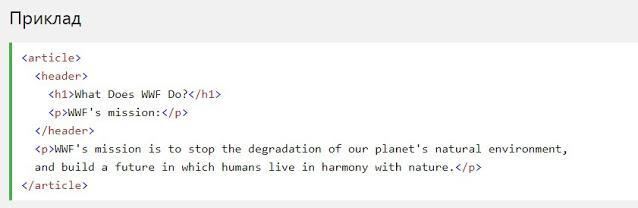

HTML5 Семантичні елементи
Семантичний елемент чітко описує його значення як для браузера, так і
для розробника.
Приклади не семантичних елементів: ‹div› і ‹span›- нічого не говорить
про його вміст.
Приклади семантичних елементів: ‹form›, ‹table› і ‹article› - чітко
визначає його зміст.
Підтримка браузерів

Семантичні елементи HTML5 підтримуються у всіх сучасних браузерах.
Крім того, ви можете "навчити" старих браузерів, як обробляти "невідомі
елементи".
Прочитайте про це в підтримці браузера HTML5.
Нові семантичні елементи в HTML5
HTML5 ‹section› елемент
Елемент ‹section› визначає розділ в документі.
Згідно з документацією в3к'с HTML5:
розділ представляє собою
тематичну угруповання контенту, зазвичай з заголовком
.
Домашня сторінка зазвичай може бути розділена на розділи для
ознайомлення, змісту і контактної інформації.

HTML5 ‹article› елемент
Елемент ‹article› визначає незалежний, автономний вміст.
Стаття повинна мати сенс самостійно, і вона повинна мати можливість
читати його незалежно від іншої частини веб-сайту.
Приклади того, де можна використовувати елемент ‹article›:
- Повідомлення на форумі
- блозі
- Газетна стаття

HTML5 ‹header› елемент
Елемент ‹header› задає заголовок для документа або розділу.
Елемент ‹header› повинен використовуватися в якості контейнера для
вступного змісту.
В одному документі може бути кілька елементів ‹header›.
У наступному прикладі визначається заголовок для статті:

HTML5 ‹footer›› елемент
Елемент ‹footer›› вказує нижній колонтитул для документа або розділу.
Нижній колонтитул зазвичай містить автора документа, інформацію про
авторське право, посилання на умови використання, контактні дані і т.д.
В одному документі може бути кілька елементів ‹footer››.